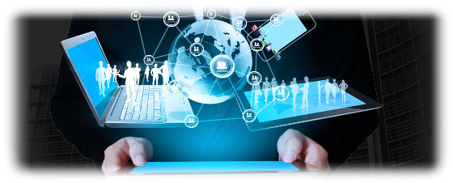
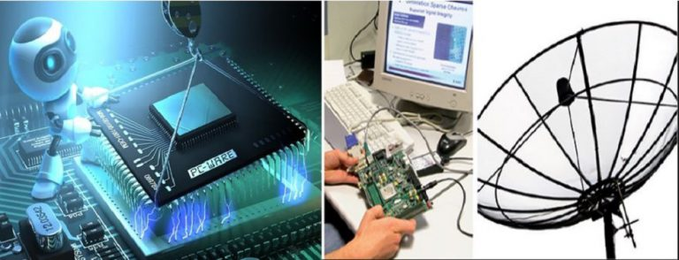
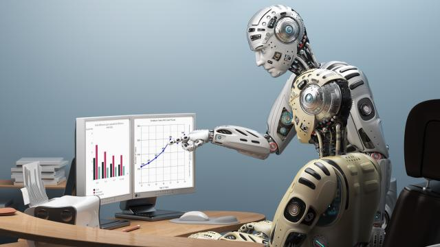

Universidad de Panamá facultad de electrónica y comunicación


facultad electrónica y comunicaciones
Te damos una cordial bienvenida a nuestra Facultad de electrónica y comunicaciones . nuestros objetivos son Promover, en los docentes y estudiantes, la investigación científica, tecnológica y humanística.
Definir líneas de investigaciones en las áreas de Informática, Electrónica y Comunicación.
Producir investigación científica que aumenten nuevos conocimientos y que satisfaga los requerimientos nacionales en materia de Informática, Electrónica y Comunicaciones.
Fomentar la participación del personal docente y educando en el diseño y ejecución de proyectos vinculados a la Ingeniería Informática, Electrónica y Comunicación, de manera que se consolide e incremente el desarrollo integral del país.
Promover la unidad entre Universidad y Sociedad, a través de la cooperación de 105 sectores productivos, privados o públicos, en la investigación e innovaciones científicas y tecnológicas.
ofrecemos las siguientes opciones de carreras
Licenciatura en Ingeniería Electrónica y Comunicación Objetivo General:
Preparar Profesionales en tecnología de punta; para el desarrollo del país, administración y el mantenimiento de los equipos de los sistemas electrónicos y de comunicaciones. El egresado de esta carrera es un profesional de la Ingeniería con conocimientos de la teoría y de la práctica de sistemas y de dispositivos electrónicos utilizados en diversas aplicaciones industriales, comerciales, residenciales y otras instalaciones especiales. Es capaz de atender y resolver problemas de la comunicación y de la electrónica en todas sus fases.
Licenciatura en Ingeniería en Informática Objetivo General:
Crear científicos e ingenieros cuya tarea principal es el desarrollo de los principios y las técnicas de computación e informática. Perfil del Egresado:
El licenciado en Ingeniería en Informática egresado de esta carrera debe ser un profesional de la Ingeniaría poseedor de conocimientos multidisciplinarios, científicos y tecnológicos necesarios para aplicar la informática en diversos ambientes tales como: Industrial, Teleinformática, Comercial, Educación, Doméstico y Social.
La formación Matemática y de Informática pura brindan al Licenciado en Ingeniería en Informática las facilidades para la realización de investigaciones en Tecnología Informática de punta.
Licenciatura en Informática Aplicada a la Enseñanza e Implementación de Tecnologías Objetivo General:
Formar profesionales de Informática capacitados integralmente, con el fin de apoyar los procesos de aprendizaje, transferencia e innovación científica y tecnológica en el área educativa y empresarial que impulse el desarrollo humanístico y científico del país Perfil del Egresado:
El Licenciado en Informática Aplicada a la Enseñanza e Implementación de Tecnologías debe ser: Un profesional poseedor de las teorías de aprendizaje, con técnicas y estrategias didácticas y conocimientos humanísticos, científicos y tecnológicos, que lo habilite para aplicar de manera integral la Informática a ambientes educativos y empresariales; favoreciendo la correspondencia entre los requerimientos de la sociedad en el sistema educativo y productivo del país y el saber de su especialidad.
Ingeniería Mecatrónica Perfil del Egresado:
Conoce los fundamentos básicos en ciencia y tecnología necesarios para las ingenierías.
Utiliza enfoques estructurados para el desarrollo del emprendimiento empresarial de forma optimizada.
Planifica y administra, científica y técnicamente los recursos económicos y financieros de las empresas e instituciones, gestionando los riesgos considerando la ética, la moral y el desarrollo social.
Plantea estrategias para desarrollar el talento humano alineadas a las políticas de la organización, considerando aspectos éticos y legales, con la finalidad de preparar a la empresa para enfrentar los desafíos de la competencia.
Aplica las tecnologías existentes y emergentes.
Aplica los métodos teóricos y prácticos apropiados al análisis y solución de problemas de ingeniería.
Desarrolla actitudes creativas e innovadoras de la tecnología en ingeniería y de los sistemas de mejora continua.
Diseña, instala, da mantenimiento y opera sistemas automatizados.
Desarrolla, implanta y mantiene sistemas de control de procesos.
Diseña e implanta sistemas integrados.
Diseña circuitos y sistemas electrónicos analógicos, digitales, mixtos y de potencia.
Licenciatura en Gerencia de Comercio Electrónico Objetivo General:
En concreto, el estudiante de la carrera propuesta aprenderá a:
Comprender los procesos de globalización y acceso a mercados potenciales de millones de clientes.
Comprender la dimensión internacional de los negocios mediante la aplicación de herramientas específicas de marketing, finanzas y comunicaciones, operaciones y estrategias.
Desarrollar e implementar estrategias tanto para compañías globales como para locales que extiendan sus actividades a un entorno internacional. Perfil del Egresado:
El joven que egrese de la Carrera Licenciatura en Gerencia de Comercio Electrónico, deberá poseer el siguiente perfil:
Conocer el desarrollo del comercio electrónico como opción personal.
Habilidad para desarrollar las estrategias de ventas «online» para el comercio.
Creativo y comunicativo mediante el empleo de estrategias y experiencias prácticas de Marketing más relevante para el mercado de nuevas tecnologías en la sociedad de la información.
Ofrecer una visión actualizada del panorama de los usuarios de Internet y su evolución a lo largo del tiempo.
Participa creativamente en los problemas y sus formas de solución.
Reflexiona e investiga permanentemente en aras de buscar el éxito y la eficiencia.
Expresa curiosidad y cuestiona constructivamente el mundo globalizado que le rodea.
VIDEO VIDEO
formulario